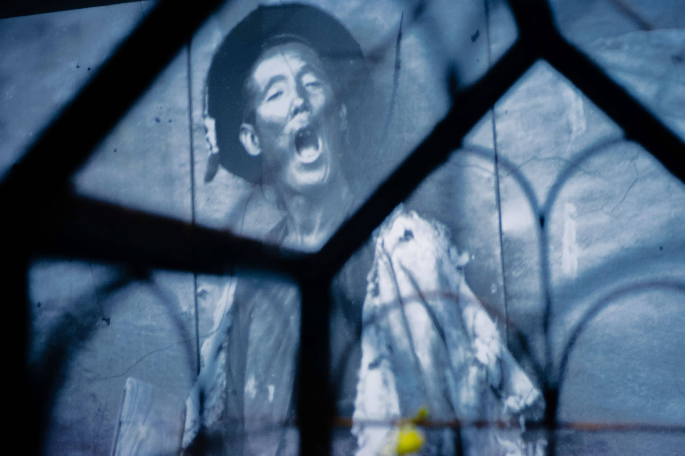
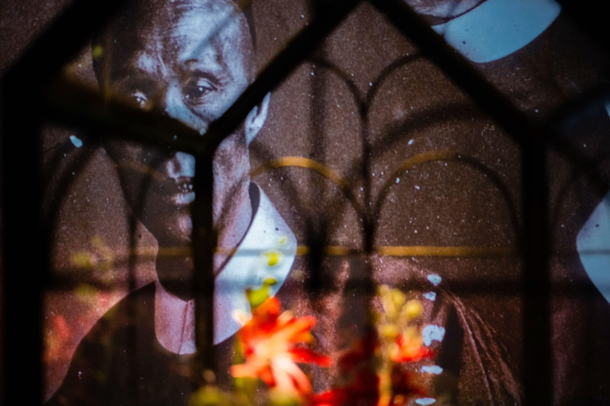
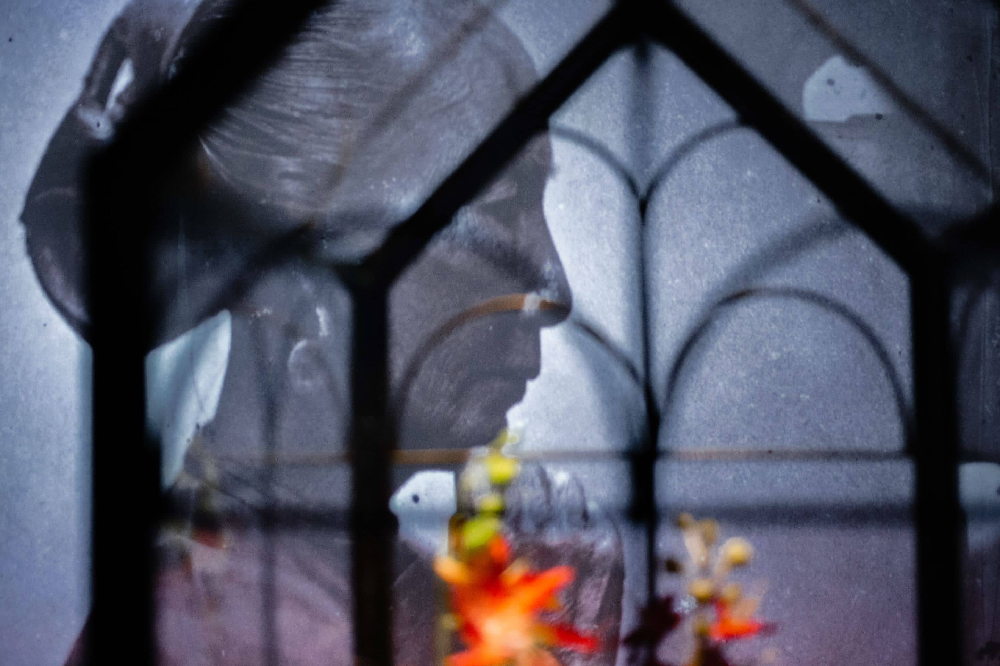

Фото: Анна Матвеева
Межконтинентальное баллистическое искусство
Уральская индустриальная биеннале прошла на секретном оборонном заводе
18:41
21 ноября 2019
Андрей Тестов
Уральский оптико-механический завод
Фото: Анна Матвеева
Уральский оптико-механический завод (УОМЗ) — закрытое режимное предприятие, группа высокотехнологичных производств оборонно-промышленного комплекса. Еще совсем недавно даже вблизи стен завода была запрещена фото съемка (да и сегодня, если вы слишком внимательно целитесь объективом в сторону производственной территории, к вам может подбежать ретивый сотрудник службы безопасности). Вокруг завода нельзя было строить высотные здания, а на картах (даже во времена Google и Yandex) его территория отображалась сплошным серым пятном.
Оборонка дает добро
В сентябре 2019 года на втором и четвертом этажах корпуса оптического производства УОМЗ открылась экспозиция — основной проект пятой Уральской индустриальной биеннале современного искусства.
5-ая Уральская индустриальная биеннале
Фото: Анна Матвеева
При этом производство на третьем этаже — там выпускают призмы, линзы, кристаллы, оптические покрытия для лазерной техники — не останавливалось. Попасть на выставку современного искусства мог любой желающий — на входе требовали разве что предъявить паспорт. У екатеринбуржцев от такой новости глаза лезли на лоб: попасть на УОМЗ? Без предварительной заявки? Уму непостижимо! В итоге за два с половиной месяца работы экспозиции ее посмотрели десятки тысяч человек.
Созданием экспозиции руководила искусствовед и куратор Шаоюй Вэн. Она родом из Китая, сейчас работает в нью-йоркском музее Гуггенхайма, и у нее американский паспорт. В действующем корпусе российского оборонного предприятия она собрала работы 76 художников из 25 стран.
Уральский оптико-механический завод
Фото: Анна Матвеева
— Очень важно было перестроить всю жизнь завода. Появились отдельный вход со своей проходной, отдельная инфраструктура, возможность художникам работать. Мы вместе с организаторами биеннале прошли через огромные сложности [чтобы все это устроить], но сегодня эмоции уже положительные. Это был огромный труд, — отметил генеральный директор УОМЗ Анатолий Слудных. — Площадка выставки — действующий цех, который сейчас проходит этап серьезной реконструкции. Мы смогли выделить под экспозицию более 10 тыс. кв. метров — два этажа производственных помещений. Старое оборудование там демонтировано, до появления нового мы и разместили произведения искусства.
Экспозиция
Фото: Анна Матвеева
— Оцените поступок руководителя завода! Это одно из самых современных и самых закрытых предприятий в среде оборонных производств Урала. Кстати, 80% нашего уральского машиностроения так или иначе связано с оборонкой. Он (руководитель) совершил настоящий подвиг — спасибо ему и всему трудовому коллективу. Наша уральская культура неотделима от заводов. Работают заводы — значит, есть жизнь. Если заводов нет, значит, жизни нет. Биение жизни уральских заводов принимает очень разные формы, в том числе оно осваивается современным искусством, и это прекрасно, — не поскупился на громкие слова заместитель руководителя администрации губернатора Свердловской области Вадим Дубичев на открытии основного проекта биеннале.
Отражение в художниках
Уральская индустриальная биеннале и прежде сотрудничала с госкорпорацией «Ростех» (УОМЗ в нее входит), но такого размаха совместная работа никогда не приобретала. Зачем это заводу?
Экспозиция
Фото: Анна Матвеева
— Высокотехнологичное производство созвучно тому, что есть современном искусстве: и современное искусство, и современные технологии непрерывно развиваются, и там, и там есть новизна и свежесть. Это отражает наш промышленный и философский подход, позиционирование госкорпорации в мире. В свое время художественные произведения предсказали появление и развитие технологических решений, появление новых продуктов. А сегодня технологии, которые реализованы на предприятиях, несут, наверное, вдохновение художникам, — рассуждает Анатолий Слудных.
Кстати, работы на выставке представил и Центр промышленного дизайна УОМЗ, на деле доказав когерентность современных технологий и современного искусства.
- 
- 
- 
Экспозиция
1/
Фото: Анна Матвеева
— В первый раз в лице УОМЗ мы нашли такого партнера, который все делал с горящими глазами. Казалось бы, им это [решение о сотрудничестве] спустили сверху из «Ростеха», но они все делали вовсе не из-под палки: мол, Москва приказала. Совсем нет, все свои профиты и бенефиты они сразу уловили, — рассказывает мне комиссар Уральской биеннале Алиса Прудникова, зачинатель и главный мотор всего действа. — Очень мало таких людей, которые способны прочувствовать совсем другую сферу, увидеть в ней правильную энергию, и понять, как ее для себя конвертировать.
Произошедшее, бесспорно, — выдающийся шаг выскотехнологичных (и прежде герметично закрытых) российских производств навстречу сферам социальной жизни. «Все эти аргументы — у нас действующий завод, режим, техника безопасности, мы не можем пустить столько посторонних людей, — мы много раз слышали за десять лет проведения биеннале. Но нынешняя история демонстрирует: искусство и техника безопасности научились договариваться», — подчеркивает Алиса Прудникова.
Экспозиция
Фото: Анна Матвеева
Но вот вопрос: а готово ли общество (и искусство в частности) также открыться и принять оборонное предприятие как равноценную составляющую не только экономической, но и культурной жизни?
Смертоносное бессмертие
—Раз теперь биеннале так плотно сотрудничает с «Ростехом», а ведь это бюджет оборонки, то мы на экспозицию не пойдем, потому что мы против насилия, — мне приходилось слышать такое несколько раз. Вы с подобным отношением сталкивались? — спрашиваю я Алису Прудникову.
Экспозиция
Фото: Анна Матвеева
— Здесь главная история, которая была объективно сложной и опасной, касается, скорее, международного контекста. Мы всячески старались избегать потенциально возможного скандала наподобие протестов художников в Whitney Museum или в нью-йоркском MoMA против попечителей типа Safariland (производитель оружия и средств защиты для армии и полиции, более всего известный слезоточивым газом — Bombus). Мол, это все обеление брендов через поддержку больших музеев: выдал 10 миллионов долларов MoMA, и общественная карма у тебя почистилась. Да, это большая дискуссия в мире искусства, и пока непонятно, как с этим быть и работать дальше.
Экспозиция
Фото: Анна Матвеева
Но я считаю, что наша совесть чиста, и от миссии индустиральной биеннале мы точно не отступили. Мы с самого начала хорошо понимали, что любой завод в любой стране строится для того, чтобы выиграть войну. И весь Урал был освоен русскими железоделательными заводами с этой же целью. Оттого в этом смысле я не ставлю себе никаких ограничителей. Мы живем и работаем на той территории, которая была основана, чтобы поставлять ресурсы, чтобы побеждать в войне. Надо просто признать это.
Больше всего я не люблю огульные маркировки в духе «раз это военный завод — то это кошмар и ужас». Мой ответ людям, которые не ходят туда, потому что это связано с «Ростехом», — пусть они поглубже посмотрят на свою систему потребления, и, скорее всего, сами обнаружат, что не абсолютно чисты для таких радикальных заявлений.
Экспозиция на площадке кинотеатра Колизей
Фото: Анна Матвеева
— А как работалось с иностранными художниками, с куратором из музея Гуггенхайма Шаоюй Вэн?
— Мы, конечно, были предельно аккуратны в работе с художниками. Для Шаоюй Вэн это было особенно важно. Поэтому у нас есть манифест, где мы объясняем свою позицию по отношению к «Ростеху» и к этому заводу. Во всех возникающих сложных ситуациях я твердила: Шаоюй, ты делаешь century momentum, потому что никогда в жизни больше не представится такой возможности — сделать биеннале в России на режимном действующем предприятии на тему бессмертия. В текущих геополитических условиях, мне кажется, это самые честные условия для разговора на эту тему.
— Мне видится, ей все же тяжело было работать: она даже отказалась разговаривать со мной про это.
Экспозиция
Фото: Анна Матвеева
— Всем было тяжело. Это было взаимное испытание. Для человека, привыкшего к стандартам очень богатого американского музея, включаться в наш проект с непредсказуемыми условиями трудно. Да, мы на старте проговаривали, что, скорее всего, можно будет немного увеличить первично заявленный бюджет, но ведь его невозможно увеличить в два раза! И был ужасный момент, когда она вдруг поняла, что все, предел достигнут. Поэтому мы были вынуждены много где пойти на компромиссы, и на этом сильно погорели эмоционально. Но идеологических конфликтов у нас не было, все наши сложности были в ограниченности ресурсов, которых не хватало, чтобы реализовать все ее идеи.
Экспозиция
Фото: Анна Матвеева
— До этого биеннале больше работала с архитектурным наследием, с конструктивизмом — бывшая типография «Уральский рабочий», гостиница «Исеть». Городское сообщество к ним относится с трепетом, и смыслового напряжения не возникало: да, это наше великое достояние, его надо оживлять, сохранять и так далее. Но в этот раз вы впервые устроили основной проект биеннале на передовом действующем предприятии, которому никакого дополнительного оживления не требуется.
— Всему свое время. Тогда для нас было важной задачей перезагрузить тему с конструктивизмом, мы в ней долго работали и жили. Конструктивизм сегодня признан брендом города, и это огромное достижение биеннале. Но в нашей миссии всегда было записано, что биеннале работает с индустриальностью как наследием и, подчеркиваю, — актуальной практикой. Эта мантра, которую мы всегда повторяем, она с нами с самого начала. Даже когда основной проект был на «Уральском рабочем» или в «Исети», спецпроекты — это действующий Уралмаш, действующий ВИЗ (Верх-Исетский металлургический завод. — Вombus); арт-резиденции, которые проводятся с 2012 года, тоже всегда работают с действующими предприятиями по всему Уралу.
Экспозиция на площадке кинотеатра Колизей
Фото: Анна Матвеева
Заметь, в прежние годы программа арт-резиденций тоже была более лирическая, поэтизирующая Урал, а нынче она стала остро критической. В этом году у нас гораздо более смелый и проблемно ориентированный диалог с заводами. То, что мы пришли к Асбесту, то, какой проект сделала Аня Марченкова («Музей условий реализации труда», посвящен работе в условиях повышенного шума, высоких температур, вибрации и излучения. — Вombus) — все это не было бы возможным еще лет пять назад.
— То есть эта биеннале вышла более спорная, дискуссионная и острая?
Экспозиция
Фото: Анна Матвеева
— Конечно, и она сознательно была сделана такой. Тема биеннале — «Бессмертие», с ней в принципе нельзя не поспорить. Да вдобавок на УОМЗе, который с одной стороны работает на военный комплекс, а с другой — производит медицинское оборудование.
— А то, что биеннале стала более острой и спорной, не сказалось на ослаблении зрительского интереса?
— Совсем нет. Даже наоборот: в этот год я впервые по-настоящему почувствовала то, что по-английски называется established project. Я ощутила поток зрителей. Это новое ощущение. Потому что на предыдущих биеннале все равно все силы были пущены на то, чтобы затащить, привлечь — и партнеров, и зрителей. А теперь вектор меняется.
Посетители Уральской биеннале
Фото: Анна Матвеева
Прошедшие десять лет мы конструировали взаимный интерес, но теперь я могу сказать, что мы его наконец построили. Раньше почти на каждой встрече очень много приходилось объяснять, что это вообще такое, как это будет классно и здорово провести индустриальную биеннале. А теперь продвинутый бизнес сразу говорит — да, биеннале это круто, а что еще вы можете? И это совсем другая ситуация: прекрасно работать, когда тебя понимают. В то же время это совсем новая ответственность, потому что от тебя каждый раз ждут чего-то нового.
— И что это будет?
— Мы никогда не знаем, что будет через два года. У нас нет никакого сценария, у биеннале нет стратегии, чего нужно достичь к 2030 году. Наша сила в том, что каждый следующий проект рождается предыдущим. Все то, что мы сейчас выучили, получили и приняли, мы еще сядем разбираем и осмыслять.
Посетители Уральской биеннале
Фото: Анна Матвеева
Вопрос о прогрессе биеннале меня, конечно, мучает. Вот я смотрю на ливерпульский проект, которому уже больше 20 лет, как на самую близкую мне по духу биеннале, потому что там тоже очень много с индустриальностью взаимодействуют. И меня их путь не очень вдохновляет…
Проходная к искусству
Ливерпуль, и правда, на роль ориентира вряд ли подходит. Индустриальность в современной Европе совсем не та, что у нас. Архитектурное наследие промышленной экономики там давно вымыто, вычищено и джентрифицировано — отдано под модные креативные кластеры. Производства-гиганты вынесены в Юго-Восточную Азию или еще куда.
Экспозиция
Фото: Анна Матвеева
Так что нынешние европейцы просто не представляют тех индустриальных масштабов, с которыми мы имеем дело на Урале. Более того — действующих гигантов. В Европе считается, что промышленность отжила свой век, а современное искусство призвано вдохнуть в ее наследие новую жизнь. Но на Урале ревитализировать индустриальный уклад нет нужды: на нынешней биеннале и промышленность и искусство одинаково продвинуты.
Как же отреагировали на поселившееся современное искусство на УОМЗ?
— Экспозицию посетили более тысячи заводчан и ветеранов завода. Мы очень волновались, как это будет воспринято, особенно ветеранами завода — теми, кто отдал по 30 — 40, а то и 50 лет работе здесь.
Экспозиция
Фото: Анна Матвеева
И вот они совсем по-другому увидели пространства, атмосферу, в которой провели огромную часть своей жизни. Интерес к выставке был очень серьезный — заводчане образовали живую очередь, когда им можно было посетить биеннале. В результате экспозиция позволила выстроить взаимосвязь между современным искусством и современным производством, — подтверждает успех начинания Анатолий Слудных. — И мы задумываемся над тем, чтобы какие-то вещи, которые связаны с биеннале, на заводе остались.
— Кто-то из заводчан возвращался в входные с семьями. Нам было суперважно, чтобы они стали нашими соратниками, наши медиаторы специально разработали экскурсию, которую мы назвали «Биеннале для технарей». Я пытаюсь собирать обратную связь, она не тотально позитивная, но лейтмотив примерно такой: ничего не понимаю, но очень круто. У нас несколько книг отзывов заполнено, я очень рада, что люди высказываются. Да, кого-то что- то задевает — это нормально, главное, что они не молчат, — добавляет Алиса Прудникова.
Территория оптико-механического завода
Фото: Анна Матвеева
Но все ли современные уральцы готовы осознать всю полноту и мощь индустриального наследия края? Оторопь от сотрудничества современного искусства и оборонного УОМЗ свидетельствует, что это непросто. «Да, [на биеннале] мы говорим о современном искусстве, а на входе — пропускной режим. С одной стороны — свобода творчества, с другой — необходимые обстоятельства, без которых не может сегодня обойтись высокотехнологичное производство, — замечает директор департамента музеев министерства культуры РФ Владислав Кононов. — И это показывает разные стороны нашего бытия: оно многомерно». А прошедшая выставка убедила: те, кто вынужден вести работу за строжайшими контурами безопасности, на деле куда более открыты совместному творчеству, чем об этом принято думать во «внешнем мире».
Видео: Анна Матвеева
Читайте также
-
Длинный заголовок для новости без подводки в девяносто пять знаков может быть в несколько строк
20 часов назад
-
Короткое описание материала максимум 100 знаков может быть в две или несколько строк под заголовком
20 часов назад
Все новости оперативно на нашем телеграм-канале @Bombus
-
Разобраться

Короткое описание материала максимум 100 знаков может быть в две или несколько строк под заголовком
12 часов назад
-
Узнать
Короткое описание материала максимум 100 знаков может быть в две или несколько строк под заголовком
12 часов назад
-
Понять
Короткое описание материала максимум 100 знаков может быть в две или несколько строк под заголовком
12 часов назад